KubeCon 欧洲 2024: 云原生在浪漫之都 | 舞台之上

现在是法国巴黎时间周六凌晨，KubeCon + CloudNativeCon Europe 2024 —— 至今 CNCF 主办的规模最大的活动 —— 刚刚结束，我在 Observability Day 上分享了关联可观测性三大支柱众多方案的其中之一：基于 Span 创造 Metric 和 Log。
我分享的内容其实思路很简单，但是我们故事背后，实际使用 Span Metrics Connector 却不像介绍的那么容易。
Session Review

Observability Day 现场
Exemplar: The Pain Point
关联可观测性 Signal 的本质是找到它们之间的共同点，很显然 Trace Context 是连接它们的纽带。但是回想一下，- 平时你看到的异常告警：
- 是否有携带对应日志？
- 是否直接给出可疑 Trace？
如果答案都是没有，那么恭喜你，和我们 —— 也可能是和许多开发者一样，忘记在 Metrics 上附带 Exemplar 了，这章正是写给你看的。
在我职业生涯至今的 80% 的时间里，我都不知道 Exemplar 的存在，或许因为它很新，也或许是缺少一个契机去了解。对于 Go 程序而言，很多时候保持 Context 的传递都是问题 —— 不是每个人都严格遵照规范写代码，更何况这些 “不规范” 的代码还能完美运行。
所以，即使有 Exemplar 的解决方案，它的使用者更多是框架、脚手架、SDK 的开发者，而不是业务逻辑本身的开发者。但是很多时候监控指标又和业务逻辑关联紧密，意味着其实业务逻辑更需要有 Exemplar 提供关联 Signals 的能力。
Span Metrics Connector
如果关联散落在不同的 Signals 行不通，那么不如试试放弃关联，转而从一种 Signal 创造出其他两种 Signals。理论上，如果某种 Signal 携带了足够多的信息，能够涵盖其他两种 Signals，那这个想法就是可行的。
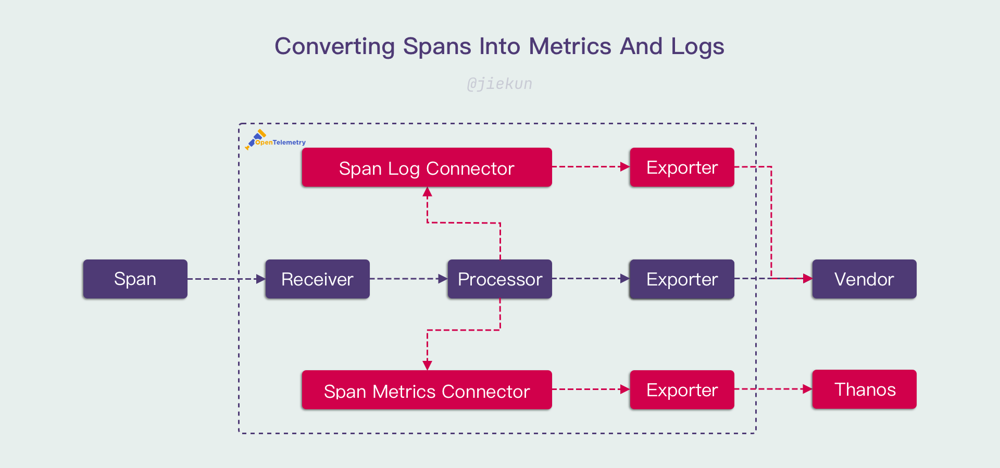
在去年的 Humans of OTel 采访上，大多数的受访者都表示 Trace 是他们最喜欢的 Signal，因为它携带的信息最丰富。所以很自然地，有人开发了 Span Metrics Connector：
- 将 Span 数量转换为 Counter，对应调用次数（Request）；
- 将 Span Status 转换为 Counter，与调用次数的比值对应错误率（Error Rate）；
- 将 Span 开始结束时间转换为 Histogram，对应调用耗时分布（Duration）；
R.E.D 指标一下子就齐了。
继续沿用这个思路，只要往 Span 中继续补充信息，例如 HTTP 参数、SQL 语句，那么基本的调用日志也可以由 Span 获得，你可以将它转换成日志，作为现有日志的补充。
对了，这些途径得到的 Metrics 和 Logs 都会带有 Trace Context —— 因为它们本身就是 Traces 的一部分。
eBPF
eBPF 其实和关联 Signals 没有那么大的联系，它只是提供了另一种 Span 的生成、采集方式 —— 如果你没有用 Trace SDK 埋点，那么它可以代替你做这个事情。准确来说，它应该归类到 Auto Instrumentation 的实现之一，而不是串联 Signals 的实现。
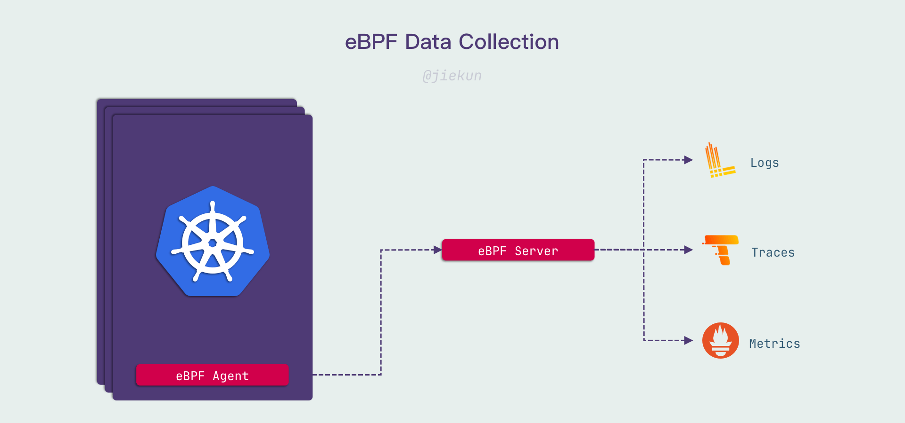
而 eBPF 程序在可观测性上一般提供两类支持，第一类是不修改你的代码和网络请求，只收集特定行为（例如网络调用），并且解析其内容；第二类则是结合代码、框架进行插装，让它产生与使用 Client SDK 埋点一样的效果。
这两种思路都能采集对应的 Span，但是：
- 如果没有实际插装，eBPF 采集的 Span 缺少 Trace Context，关联它们需要依赖一些底层的信息，关联会变得很困难，不管是完整性还是性能上都是如此；
- 如果要进行实际插装，那就要与框架 SDK 紧密结合，需要逐一开发提供支持，并且也要关注性能损耗。
我们接触过的 eBPF Agent 使用的是第一种思路，它能很好地提供 Metrics 和 Logs，但是在 Traces 的使用上表现不达期望。所以我对第二种思路会抱有更多的期待。
The Missing Chapter
Signals 转换真的那么简单好用吗？也未必，在 Observability Day 上，许多细节因为时间、选材原因没有继续探讨。我想将它放在博客中作为一点补充。
Trace Sampling
众所周知，Trace 中的一个难点在于海量数据的处理，假设全局每秒产生 1M 个 Span（这个数量并不多），每个 Span 体积为 100 Bytes，那么每日需要用于存储这些 Trace 的空间为：
1000000 * 100 Bytes / (1024 * 1024 * 1024 * 1024) Bytes/TiB * 86400 Seconds = 7.8 TiB
每年则需要 2800 TiB。
这些磁盘空间是有成本的，因此很多时候用户都设置了采样率来降低数据量，例如只上报 0.1% 的 Span。
采样率正常情况下不会附带到 Span 中，因此 Span Metrics Connector 的其中一个问题在于：Span 的数量是不准确、无法获知、可能动态变化的，对应地，Counter 指标的准确性需要额外信息才能进行修正。
以上是仅使用头部采样时存在的问题，当业务变得复杂，采样手段变多，存在回溯采样时 —— 即错误 Span 保证被上报，而正常 Span 按照固定/动态概率上报 —— 那么错误率的指标也会变得更加难以修正。
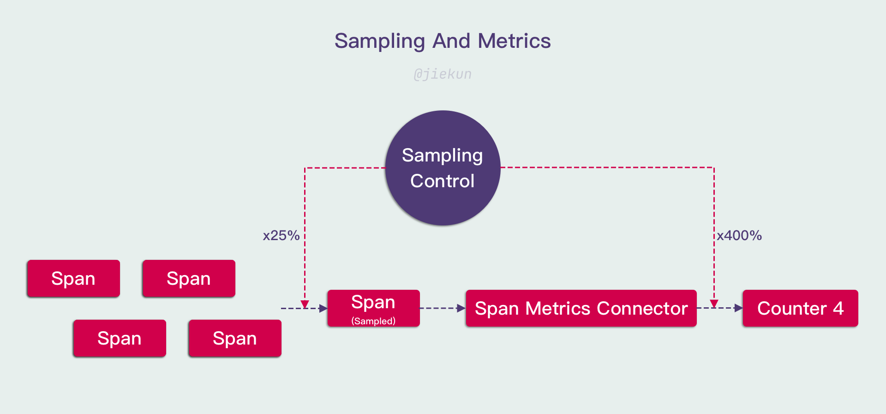
在实际使用中会存在更多复杂的情况。应对这些问题的其中一个手段是将采样率的控制收归平台，OpenTelemetry 的 SDK 提供了采样策略的 Interface，用户可以使用自定义的采样策略而非默认的头部采样。自定义采样策略只需要与可观测平台联动，通过 Notify 机制下发采样策略并缓存在 SDK 与 Span Metrics Connector 本地，就可以在 Signals 转换时对数据进行基础的修正。
High Cardinality
使用 Span Metrics Connector 几乎不可避免会产生高基数指标。关于高基数指标的处理，我在分享中已经谈过一些手段，但是其实他们并不能根本解决问题，而只是延缓了问题发生的时间。
我们正在评估从 Prometheus & Thanos 迁移至全新的 VictoriaMetrics 架构，VictoriaMetrics 作为 Prometheus 的替代品，提供了更好的性能与更低的资源开销。我在内部调研文档中提到过，这可以为我们节约 50% 以上的资源。
所以我是在押宝 VictoriaMetrics 的性能吗？也不全是。不管是什么存储方案，面对高基数指标的查询能提供的支撑都是有限的，选用 VictoriaMetrics 的根本原因是：
- 它的横向扩容更加顺畅，意味着我们可能不需要进行逻辑上的 “拆分”，只需要继续提高 Sharding 数量；
- 如果 VMCluster 能够无限（或者至少在足够大的范围内）横向扩容，那么将它视为一个整体，就可以在它之前开发透明代理，用于分析指标使用情况、限制高基数指标的产生。
原因 2 对新的架构来说非常重要，因为在 Prometheus + Thanos 体系中，许多 Prometheus、Thanos Sidecar 分散在各个集群，我们很难实现一个透明代理、快速部署覆盖所有实例。当然，中心化组件也有对应缺点：
- 系统的高可用程度将会降低，可用性 = Min(VMCluster, 透明代理, …)；
- 指标数据如果集中存储，需要跨 AZ 数据传输，流量开销就会增高，同时还引入了网络专线（用于跨 AZ 数据传输）可用性的隐患。
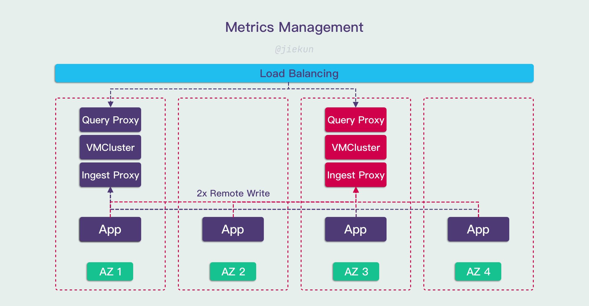
同样，为了（部分）解决这些问题，再引入 Replica 的方案，让数据留存多份副本、提供更高的可用性，就会让成本成倍提升，最终的架构方案可能变得更加复杂。
Conclusion
这次分享的想法是我在接触指标管理的这几个月内诞生的，本质上是希望介绍和推广 Span Metrics Connector。作为 End User，很多时候对组件的使用、开发程度远不及 Vendor，所以我认为分享内容仍然面向的是 Entry Level 的用户，希望能给新人一些启发。
同时，Span Metrics Connector 代表的思想在实践上也不像我在 Session 演讲上说得简单，特别是在数据量达到一定程度之后，就必须要在准确性和性能上进行妥协 —— 一来 Trace 上报和处理能力是有限的，不能忽视五花八门的采样策略对数据处理流程的影响；二来即使真的存储下了海量的数据，对应的高基数指标的使用处处都是风险，需要投入足够的资源保驾护航。
Behind The Scene
这篇博客写于我在趣丸工作的第 243 天，也就是我真正踏入基础架构工作的第 7 个月。我在过往没有做过任何与基础架构相关的事情，然而在过去 7 个月中，我完成了 3 次外部分享（2 KubeCon，1 KCD）。我认为对于领域新人来说，踏上舞台面对观众并不容易。我对能够在感兴趣的领域工作感到非常幸运，并且认为这是兴趣驱动学习的绝佳体现。

Speaking

Speaking (by CNCF photographer)
不过长远来看，成长需要有更多的沉淀，所以这大概是未来很长一段时间内的最后一次外部分享。但是让我开心的是，我已经看到了一点点技术分享带来的影响，影响身边的人，让他们变得乐于分享、向往分享，并且开始尝试提交他们的 CFP。
感谢 KubeCon 提供的舞台。晚安，巴黎。
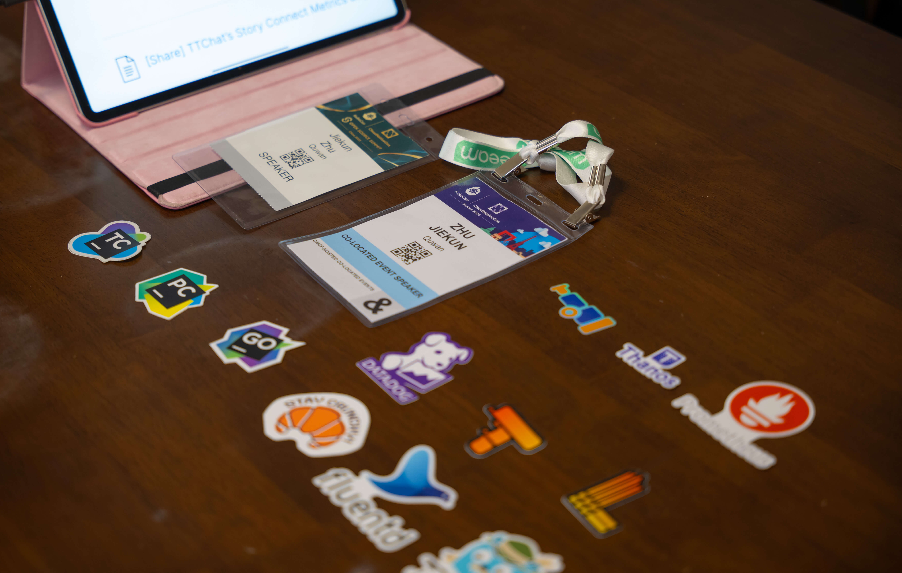
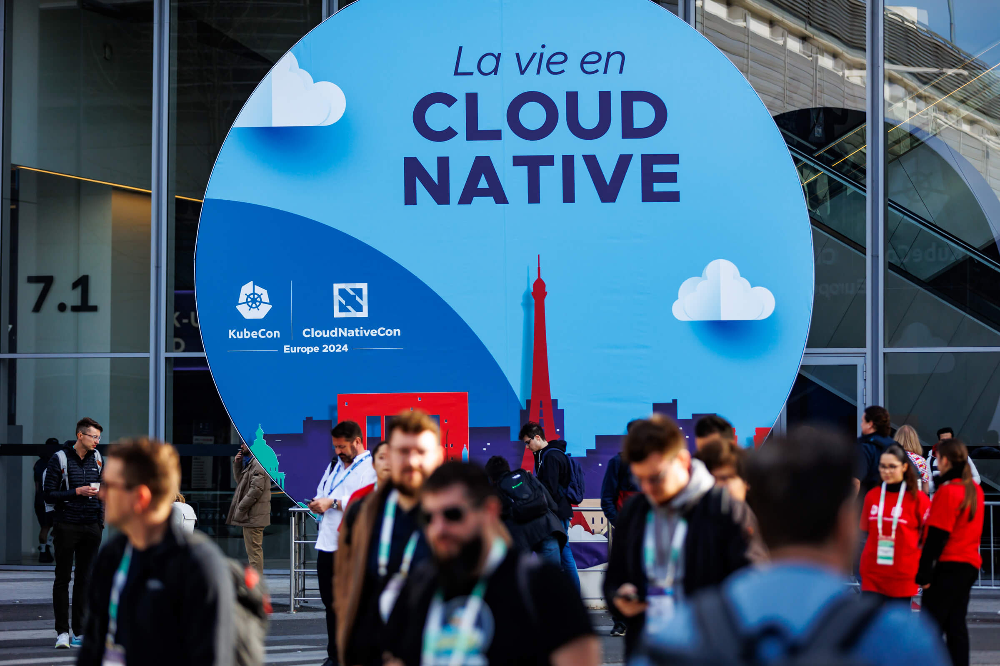
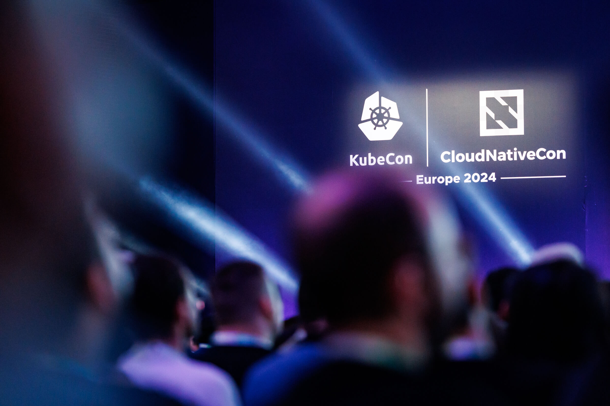
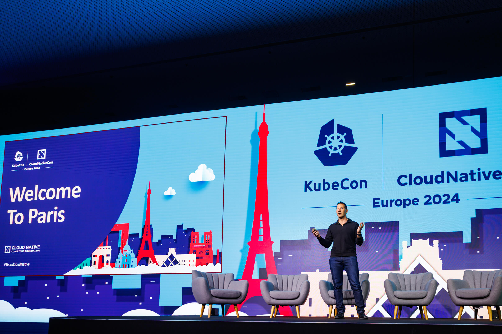
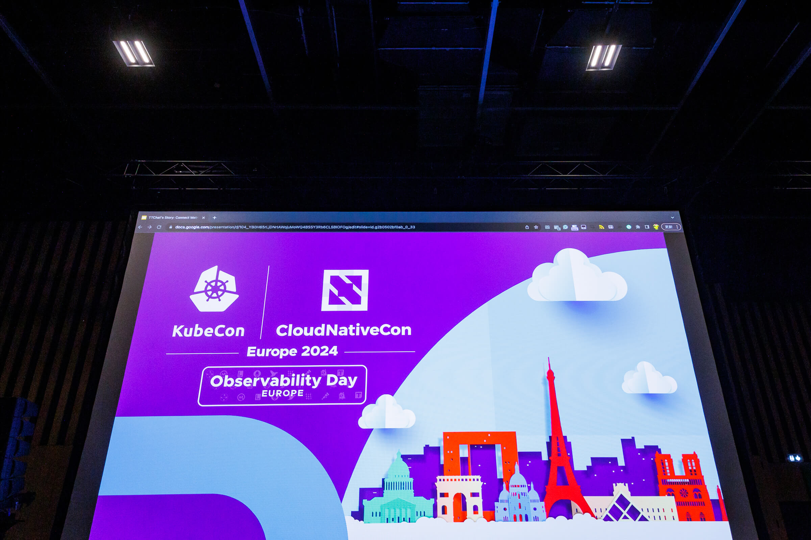
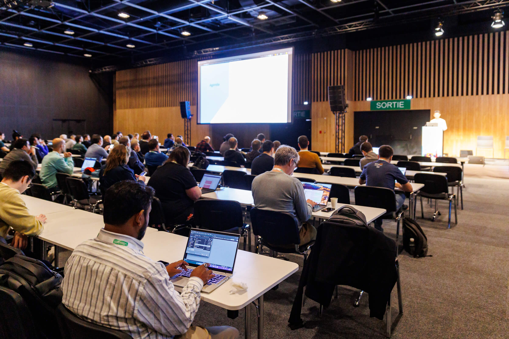
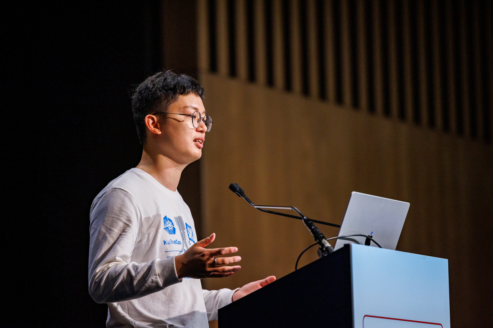